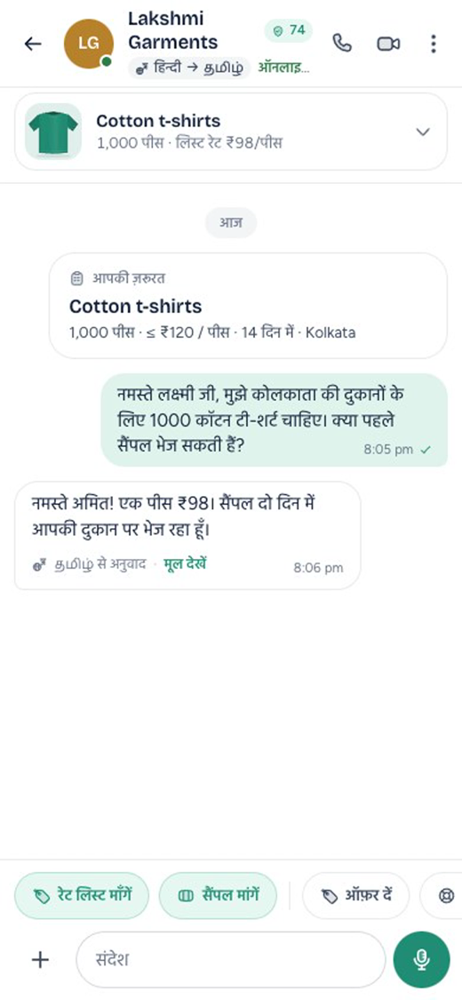
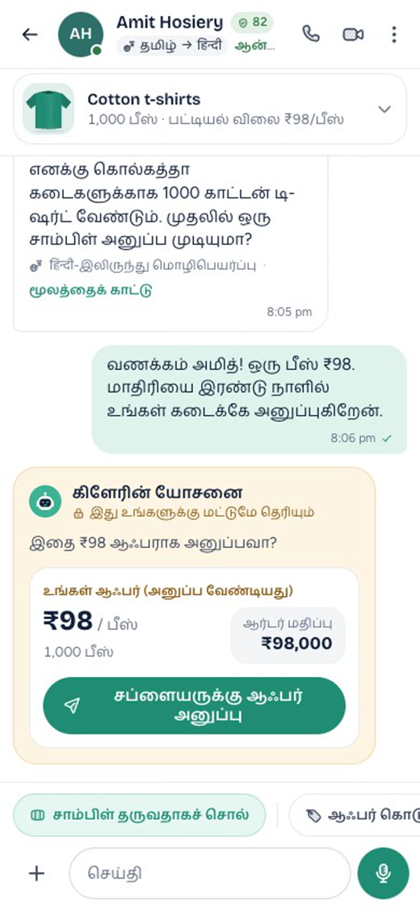
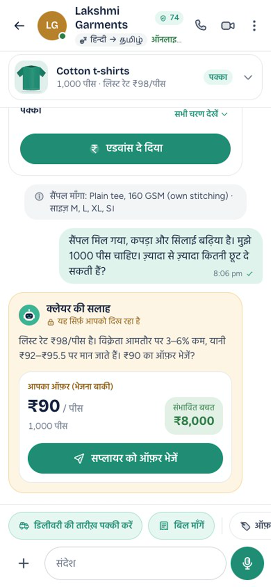
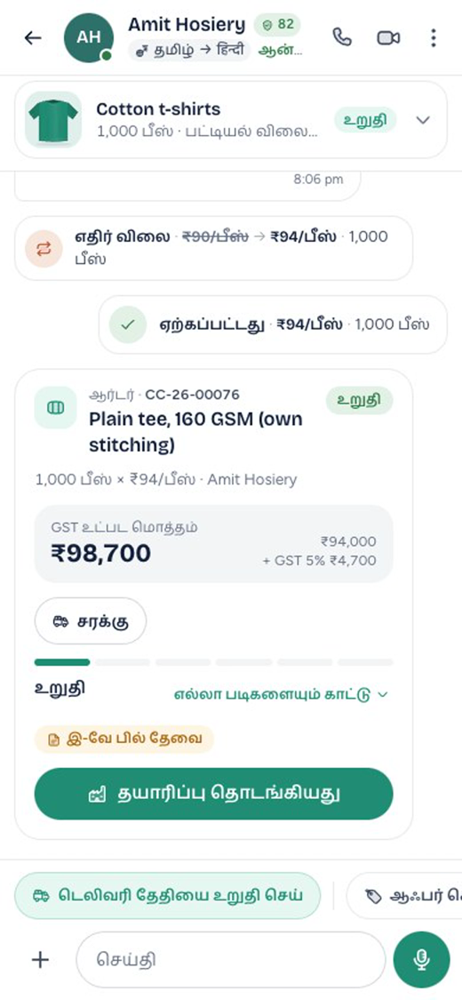

One app where everyone in India's garment supply chain can find each other, talk in their own language, close deals and track every order. Built on the Nexconn Chat SDK.
Try the demoSign in, then "Explore as a demo business"
Team Coders · Track: Marketplace and Support · Nexconn Build Challenge 2026 · Built for this hackathon
1Why we built it
This started at home. A teammate's father runs a garment unit in Tiruppur, India's knitwear town. For years he made what his regular buyers ordered. Then some of those buyers stopped ordering, and he was left with stock he had already made. There were shops in other states that needed exactly those clothes. He had no way to reach them. He did not know them, and they did not speak his language.
Making the clothes was just as hard. Yarn, fabric, dyeing, printing and stitching all happen at different units. Every order was tracked through phone calls, WhatsApp messages and paper notes. Details went missing. He could never be sure how much material he really needed, so he always bought far too much or far too little.
He is not alone. Many Tiruppur makers have lost their work and moved to other businesses. Yet buyers across India still need these clothes. The demand is there. What is missing is a way to connect it to the people who can make it.
"There were buyers who needed what we had. We just could not reach them, or talk to them."From a teammate's family, who run a garment unit in Tiruppur.
2The problem
Tiruppur shows both the size of the opportunity and the size of the gap.
₹46,000 cr
knitwear exports in FY26, a record
~₹35,000 cr
sold inside India every year (estimate)
95%
of units are small businesses
70%
of festival season sales came from old, unsold stock
1 in 4
small and medium units shut down in two years as orders dropped
Sources: Tiruppur Exporters' Association via Business Standard (Jun 2026); Deccan Herald; Apparel Resources; TEMA via DT Next and The Hindu (May 2024).
So there is plenty of work, but it does not reach the people who can do it. Three walls stand in the way:
Language
Buyers in the north and east speak Hindi or Bengali. Most makers in Tiruppur speak Tamil. Deals fall through, or go through middlemen.
Distance
Buyers travel to trade fairs to see goods. Those who cannot, buy through wholesalers and pay more at every step. Sellers send the same photos to ten buyers a day.
A supply chain nobody can see
One order passes through about eight units. Material moves on calls, WhatsApp and paper, so nobody knows what is where, or how much is really needed.
3What CLAIRE Connect does
CLAIRE Connect brings the whole chain into one place, with an AI assistant called Claire who speaks your language.
1Find the right partner
Tell Claire what you need, by typing or speaking, in any of 10 Indian languages. She finds makers and ranks them by price, trust and delivery time.
2Talk without a shared language
Every message is translated for the reader. A buyer writes in Hindi, the maker reads it in Tamil, and her reply comes back in Hindi.
3Close the deal in the chat
Ask for a sample, make an offer, agree a price and place the order with GST, all as cards in the same chat. Claire quietly tells you what a fair price looks like.
4Know who you are dealing with
Buyers rate makers on quality, value and delivery. Makers rate buyers on paying on time. Everyone sees a trust score before they trade.
5Run production in one place
Every unit you work with is on the same app. Send fabric for dyeing or pieces for stitching, and both sides see what went out, what came back and what is still pending.
6Get help from a person
If a payment is late or a delivery is short, our Trade Desk sends someone who speaks both languages into the same chat to sort it out.
A real deal, from the demo: two people, two languages, one order
AskAmit, a buyer in Kolkata, asks Claire in Hindi for 1,000 cotton T-shirts
›
MatchClaire finds Lakshmi Garments in Tiruppur
›
TalkHe writes in Hindi, she reads in Tamil, and replies with a price
›
SampleHe orders a sample to check the fabric and stitching
›
PriceClaire privately tells him sellers settle 3 to 6 percent lower
›
OrderThey agree ₹94 a piece. The ₹98,700 order appears for both

Amit's phone, in Hindi. Lakshmi's Tamil reply reaches him in Hindi.

Lakshmi's phone, in Tamil. Amit's Hindi message reaches her in Tamil.

Only Amit sees this. Claire's tip on a fair price, with a one tap offer.

Deal done. The order with GST, in Tamil on her phone and Hindi on his.
4One order, many hands, one view
A single T-shirt order touches many businesses. Today each of them keeps its own notes. On CLAIRE Connect they work in the same place, so the owner of the order can see every step.
What the owner can see at any moment
How much material went out to each unit, and how much came back
Where every piece is right now: at a unit, in the shop, on the way, or with the buyer
Which work is late, and which units deliver on time
How much is lost at each step, so the next purchase is planned on real numbers, not guesses
Ask, do not search. Every business has its own private Claire. Ask "how much fabric is still with the dyer?" in Tamil, Hindi or English and she answers from your own records. Or just tell her "sent 400 pieces to Priya for stitching" and she fills in the record for you to confirm.
Who it is for: everyone in the garment supply chain
Yarn tradersspinners, agents
Knitting unitsfabric makers
Dyeing unitsand processing
Printing and embroidery
Fabric and trims shopsbuttons, labels
Cutting units
Stitching unitsjob work
Checking and packing
Garment makersand brands
Transporters
Wholesalers
Retailersacross India
One business often plays more than one part. A unit can buy fabric, cut in house, send stitching outside and sell to shops, all from the same account.
Built on Nexconn: the SDK features we use
Chat SDKDirect channelsGroup channelsSystem channelCustom messagesTargeted messagesTranslationHistory and unreadRead receiptsTyping indicatorsWebhooksCall SDK: voice and video
Every conversation in CLAIRE Connect runs on Nexconn, using the web Chat SDK (@nexconn/chat, @nexconn/engine), the Call SDK (@nexconn/call) and the Server API. App Key: m7ua80gbmcvhm
Direct channels
Each user's private chat with Claire, for finding partners and asking about their own records.
Group channels
Every buyer and seller deal room, every chat between two units in the supply chain, and Trade Desk support. An agent joins the same group.
System channel
Order, payment and dispatch updates.
Custom messages
Sample, offer, order and handover cards, voice notes and quick replies, all inside the chat.
Targeted messages
Claire's private price tips. Only one person in the chat sees them.
Translation
Every chat shows in the reader's language, across 10 Indian languages.
History, receipts, typing
Chat lists with unread counts, earlier messages, read receipts and typing indicators.
Webhooks
Let Claire reply, spot prices, and call the Trade Desk when a deal turns sour.
Call SDK
One tap voice and video calls from a deal or from the Trade Desk.
5Where it goes next
Garments are where we start, because that is where our story is. But the same three walls stand in front of almost every small manufacturing town in India. Each one is a cluster of small units that depend on each other and sell to buyers far away.
Tiruppurknitwear (now)
Ludhianahosiery, cycle parts
Aligarhlocks, hardware
Moradabadbrassware
Rajkotengineering parts
Morbiceramic tiles
Firozabadglassware
Agrafootwear
Surattextiles
Jalandharsports goods
Our goal is simple: match supply with demand, so that a small maker anywhere in India can find buyers, work with partners in any language, and run production without losing track. Small units stay free to use it; larger makers pay for production tracking and reports; and a small fee applies to orders closed in the app.